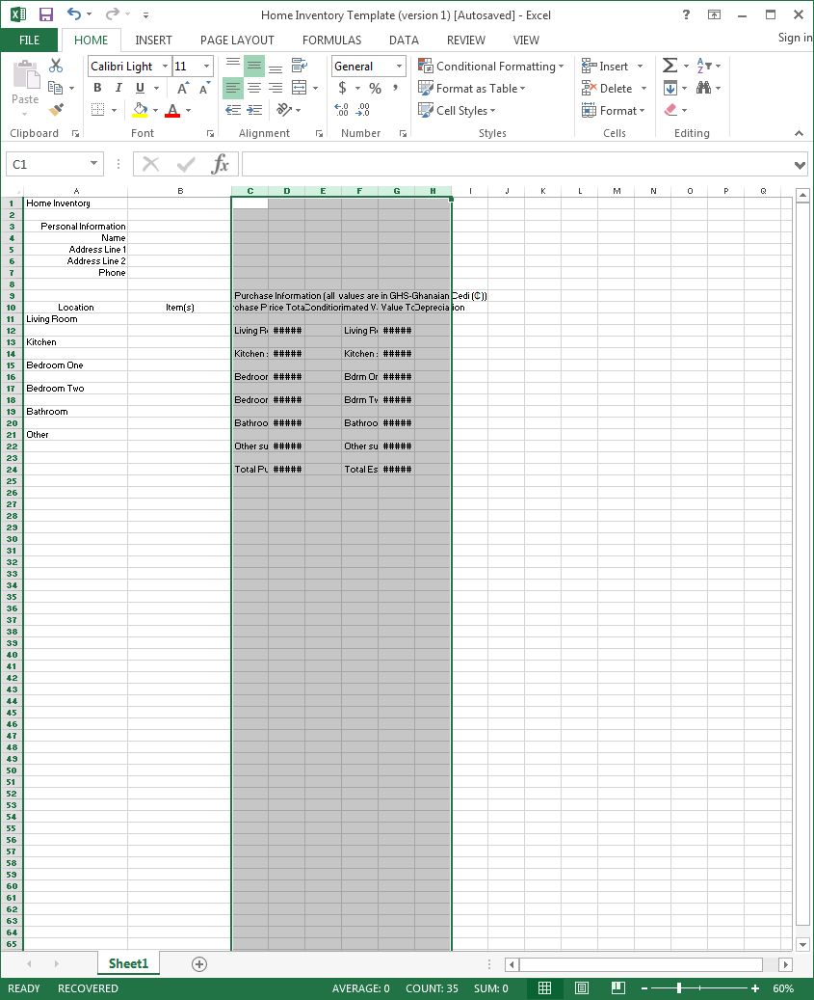
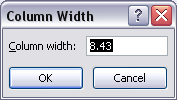
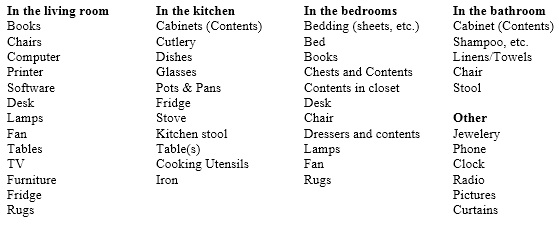
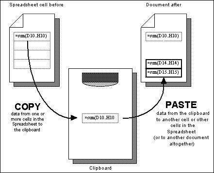
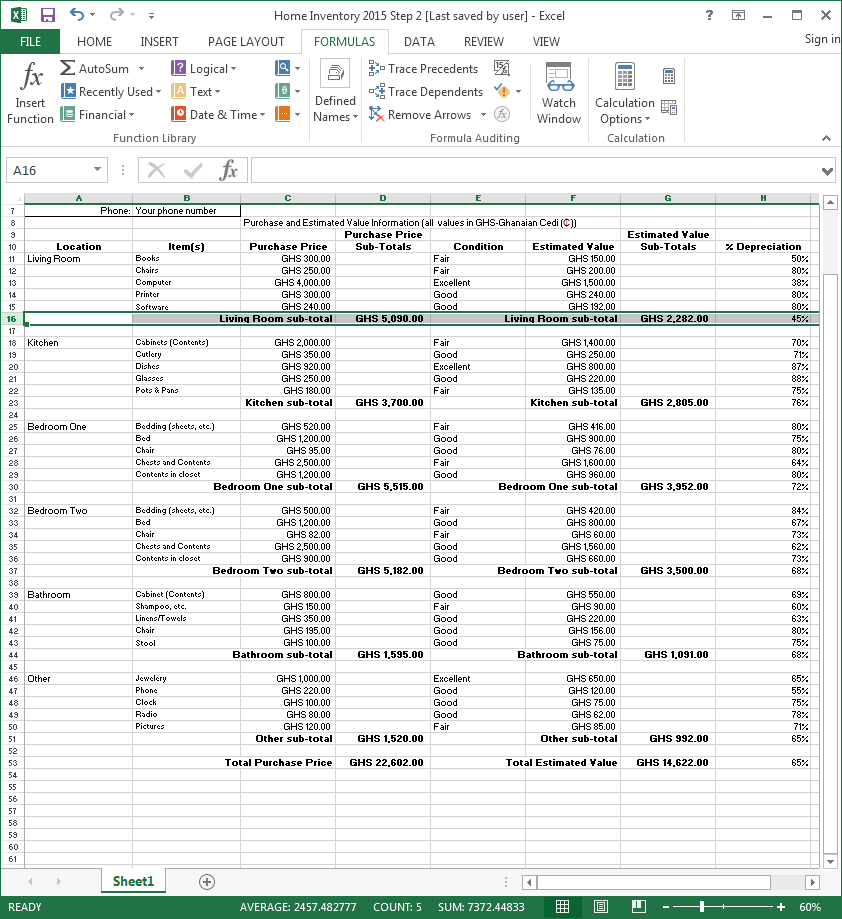

Lesson 4 Introduction to The Calc Spreadsheet¶
4 Introduction to the CALC spreadsheet
Preparing a Home Inventory spreadsheet
LEARNING OUTCOMES
This tutorial will help you understand what a spreadsheet is and where a spreadsheet might come in useful for classroom management. Specifically you will learn about the following topics.
• Helpful hints for understanding the basic concepts of a spreadsheet, including:
• cells, rows and columns
• cell coordinates
• entering data into a spreadsheet cell
• Setting up labels, including:
• setting column widths
• aligning data in cells
• entering column and row labels
• Creating and copying formulas
• Making changes in a spreadsheet
• inserting rows and columns
• deleting rows and columns
• Producing a printed copy of the contents of a spreadsheet document
• Saving a backup copy of your work
• Appreciating the power of spreadsheet templates
4.1 GETTING STARTED
Setting up for the tutorial
If you completed Lesson 1 of these tutorials, you can skip the rest of this section and proceed directly to Before we begin, on the next page. If you did not complete Lesson 1, then you must do this now, before proceeding with the rest of Lesson 4.
The set of Work Files for LibreOffice ideally should be stored on a Flash drive (USB drive) in three folders named Base Files, Impress Files, and Miscellaneous Files. You need to create a fourth folder for the data files that you will be creating while working your way through the tutorials. This fourth folder will be called Data Files.
Here are the steps to take to prepare these folders now before proceeding with this tutorial.
First, Unzip the set of Work Files for LibreOffice by double clicking on the File name on your computer (your instructor will help you with this if you are working with a class) and Extract them onto your flash drive
Double click on the Work Files for LibreOffice folder to open it
Now, inside the Work Files for LibreOffice folder you need to create a new, fourth, folder called Data Files. Here’s how you do this.
In the Work Files for LibreOffice folder, select New Folder (Fig. 4.1).

Fig. 4.1 Creating a New Folder
The system will create a new folder for you and then wait for you to give it a name of your choice (Fig. 4.1 above).
Call the new folder Data Files
During the course of these tutorials you will be storing many files in this Data Files folder.
Before we begin
For this lesson it will be good to have a separate folder inside your Data Files folder for the spreadsheets you’re going to create.
When you are ready, go to Start > My Computer > Your USB drive > Work Files for LibreOffice folder > Data Files folder, and create a new folder called Spreadsheet Documents
Some background about spreadsheets
Fig. 4.1 illustrates a typical spreadsheet for keeping track of an inventory of items in your home.

Fig. 4.1 Typical spreadsheet for a Home Inventory
As illustrated in Fig. 4.1, a spreadsheet is a grid divided into rows that run across the spreadsheet from left to right, and columns that run from top to bottom of the spreadsheet. As with the Word processor, the best way to learn about the spreadsheet is to build one and work with it. So here goes.
Go to Start > All Programs and open Microsoft Office Calc
You should now see on your screen a new Calc spreadsheet document titled Untitled 1.
Put your USB drive containing the Work Files for LibreOffice in the disk drive
From the File menu select Save As and navigate to Work Files for LibreOffice > Data Files > Spreadsheet Documents
Type Home Inventory Template as the name for the new spreadsheet and click on the Save button
You should now be looking at a screen with the name of your document (Home Inventory Template) at the top of a blank worksheet ready for you to insert your data.
4.2 HELPFUL HINTS WHILE USING THE SPREADSHEET
A spreadsheet is a grid divided into rows and columns
The intersection of a column and row is referred to as a cell (Fig. 4.2).
Fig. 4.2 Think of the spreadsheet as a grid divided into rows and columns
Right now, cell A1 is selected in the top left-hand corner of the spreadsheet (Fig. 4.4).
With cell A1 selected, type the number 2015 in cell A1 and hit Enter so you have some data in the spreadsheet for what follows
A cell is where information, in the form of either a label, or a number, or a formula for calculation, will be entered.
Labels are where you use text (which may or may not be numbers) to
describe the data in the columns and rows.
Numbers are just that—numbers, as in mathematics. Numbers are what
spreadsheets are all about.
Formulas (or Functions) are mathematical expressions built into
certain cells that instruct the spreadsheet to carry out calculations on specified sets of numbers in the rows and columns.
Moving around in the spreadsheet
There are 1,048,576 rows and 16,384 columns in the Calc spreadsheet! That means there are well over 17 billion cells in which you can store data!
Usually you will use the mouse to select the cell you want to work in by clicking on the cell. Once you have entered data into a particular cell, you can use the commands in Table 4.1 to proceed to other related cells.
Key Pressed Effect
Tab Moves selection to the right, to the next cell in the same row
Shift-Tab Moves selection to the left, to the previous cell in the same row
Arrow keys Move selection one cell in any direction
Shift-Enter Moves selection up to the previous cell in the same column
Enter Moves selection down to the next cell in the same column
Scroll bars Scroll vertically and horizontally through the spreadsheet
Accept button Accepts data in a cell but does not move to another cell
Cancel button  Cancels data in a cell but does not move to another cell
Cancels data in a cell but does not move to another cell
Table 4.1 Cell selection commands
Try out each option now before proceeding—this will help you follow later directions
Practise by moving around the spreadsheet—after you have visited several cells, end up by clicking on cell A1 to make it the current or active cell.
Identifying the active cell’s coordinates
Look in the top left hand corner of the Calc screen (Fig. 4.2 on the previous page) to see which cell is the active cell you are in at any point in time.
Click on any cell now and look at the cell’s coordinates in the top left corner of the spreadsheet window (see Fig. 4.2 previous page)
Notice that each cell (a location in the spreadsheet) has an address which begins with a letter to indicate the column, followed by a number to indicate the row. For example, G6 identifies the cell at the intersection of column G, row 6.
Click on cell G6 now and look at the cell’s coordinates in the top left corner
Selecting a range (group) of cells
Table 4.2 lists the methods for selecting a group or range of cells.
Task Method To select a block of cells Drag from the first cell to the last cell in the block To select an entire row of cells (horizontally from left to right) Click on the number (the row label) on the left edge of the spreadsheet To select an entire column of cells (vertically, from top to bottom) Click in the letter(s) of the alphabet (the column label) at the top of the column To select several rows Drag the row numbers on the left edge of the spreadsheet To select several columns Drag across the column labels at the top of the columns
Table 4.2 Selecting a group or range group of cells
Once again, try each of these methods for selecting groups of cells
Location of the active (selected) cell after entering data into a cell
When you type data into a cell, the data appear both in the cell you have selected AND in the Entry bar at the top of the spreadsheet. See how this works for yourself now.
Click on cell B1 and type the number 2015, then look at the Entry bar above the spreadsheet cells (Fig. 4.3)

Fig. 4.3 The spreadsheet Entry bar
The data are again in both places at once, but they are not yet permanently accepted into the cell. The number 2015 awaits your acceptance of it into the spreadsheet. The data are displayed in the cell to give you the opportunity to:
1. check that they are correct before accepting them into the active (selected) cell;
2. make up your mind whether they should be entered into the spreadsheet at all;
3. decide which cell you would like to be the active cell next after the data have been copied to the currently active cell.
You accept the data by either
moving to another cell in the spreadsheet (by clicking on the Enter
key or Tab key on the keyboard or by using the mouse to click on some other cell);
or
clicking on the Accept (
 ) icon to
) icon tothe left of the Entry bar.
If you decide not to enter the data into the spreadsheet, you would
click on the Cancel box () in the Entry bar
(Fig. 4.5) and start over. If, on the other hand, the data are correct,
you would click the Accept button (),
which also keeps the cell you are working in as the active cell.
Click the Accept button () now
Notice that the number 2015 in cell B1, as with the number 2015 in cell A1, is right justified, aligned on the right edge of the cell, which is the correct justification for numbers in mathematics.
Alternatively, you may want to proceed to the cell immediately to the right of the active cell into which the number you just typed will go. Or you may want to proceed to the cell just below the active cell, or the cell just above the active cell, and so on.
A short while back you practised moving around the spreadsheet using the commands listed below in Table 4.1 on page 106. This table also lists the key(s) to press to tell Calc which cell to go to after you accept the data you have typed into the Entry bar. It might be a good idea, if you’re new to spreadsheets, to take a few minutes to check out that table again.
Practise now by making the cell in which you just typed 2015 the active cell (by clicking on it)
Then press each of the keys or key combinations in Table 4.1 (on page
- and verify the result of the action in the spreadsheet each time
Blanking out a cell or cells in the spreadsheet
The quickest way to blank out a selected cell or cells is to hit the Del(ete) key on the keyboard. Let’s try this now.
Click on the cell holding the data 2015 (cell A1) and hit the Del(ete) key
Now cell A1 is empty. The Delete key saves you having to use the mouse and menus.
Undo what you just did by pressing Ctrl-z (to put back 2015 in cell A1)
To delete the data in a group of cells you would drag across the cells to select them—they will become highlighted. Then you’d select Clear from the Edit menu or hit the Del(ete) key as before.
Practise this by dragging across Cells A1 and B1 and hitting the Del(ete) key
Bingo. Remember that you can undo the Delete operation (or any other Edit operation) by immediately pressing Ctrl-z on the keyboard.
Editing the data in the Entry bar
While you are typing in data in the Entry bar you can edit them as if you are using Word. So everything you learned in Lessons 1 and 2 will apply.
Editing data after they have been entered into a cell
If you are past the cell where you have an error and want to make a correction or change, move back to the cell in question by selecting (clicking on) it. The data in that cell will be displayed in the Entry bar at the top of the spreadsheet. Click in the Entry bar (the cursor will show where you clicked on the text) and then just go ahead and make any changes you want. Replace the old entry by clicking the Accept button () or by selecting another cell in the spreadsheet.
4.3 SETTING UP LABELS FOR YOUR HOME INVENTORY TEMPLATE
When you have completed this section, your Home Inventory Template should look like Fig. 4.4.

Fig. 4.4 Home Inventory Template
The steps that follow will help you achieve this goal. Follow them carefully.
Select cell A1 and type Home Inventory
Check the data in the Entry bar to make sure you typed the label correctly; correct any errors
Click the Accept button () when you are sure all is well (or press one of the other keys—arrow keys, Enter/Enter key, Tab key—which accept data into the spreadsheet)
This is an example of a label—which is any text you use to describe the data that are in a spreadsheet. All the column and row headings are also labels.
Notice that the label “Personal Information” overflowed the cell in which you typed it. The cell isn’t wide enough, so you need to widen the A column to allow for the length of this and other Labels describing information you will later be entering into that column.
Make sure you have any cell in column A selected, then from the Home Ribbon select the Cells Group > Format > Column Width
Type the number 25 in the dialog box that pops up, then click on **OK **
While you’re at it, click anywhere in column B (Item(s)) and, in the Home Ribbon again, select the Cells Group > Format > Column Width and adjust the width to 25, too
Later in this section you’ll practise adjusting the width of other columns.
Select cell A3 and type the label Personal Information:, then press Enter to move the cell pointer to cell A4
Type the label Name: and press Enter to move the cell pointer to cell A5
Next type the label Address Line 1: and press Enter to move the cell pointer to cell A6, type the label Address Line 2: and press Enter to move the cell pointer to cell A7, type the label Phone:, then click on the Accept button () in the Entry bar
At this point you should be thinking about saving the work you have completed to this point! Since you have already named the document (Home Inventory Template), you can use a quick keyboard shortcut.
Press Ctrl-s to save your work to this point
Aligning data in spreadsheet cells
The grade book will look best if the three labels you just entered into cells A3 to A7 of the spreadsheet are right aligned in their respective cells. Right aligned means that the label is aligned to the right side of the cell. Unless you tell Calc otherwise, the system will left align any data that are regular text (letters of the alphabet, for example). Likewise, the system will right align any data that are made up of numbers. This makes sense if you look at Fig. 4.5.
Fig. 4.5 Text is left aligned; numbers are right aligned
However, text sometimes looks best when it is right aligned in the cell. This is the case with the labels about your Personal Information that you just entered into cells A4 to A7. Here is how you right align the text in these cells.
Position the spreadsheet cursor on cell A4
Hold down the mouse button and drag down to cell A7, so that all four cells are selected (cell A4 will still be selected even though it is not highlighted—it has the heavier border which also indicates selection in the spreadsheet)
In the Home Ribbon > Paragraph Group click on the Right Alignment button
This will right align the cells that you have selected (A4 to A7). Check this on the screen before you go on.
Press Ctrl-s to save your work so far (this is a good habit to get into!)
Entering the column and row labels
Now you are going to enter the labels for each of the columns that eventually will contain the data about your personal possessions (your home inventory). But notice again that the columns are too narrow for the text you’ll need to type in these columns. So let’s begin by widening all the columns from C to H. For now, we’ll make them all a width of 22 (if necessary we can adjust them again later). You widened columns on the previous page, so this should be easy for you.
Use the mouse to click anywhere in Column C, then hold down the Shift key, and keep it down as you click anywhere in Column H, so the cells from C to H are selected
Go to Home > Cells > Format > Column Width and, in the dialog box that pops us, enter 22 for the width of all the cells from column C to column H
Now select cell D9 and enter the label Purchase Price, check that you have typed the label correctly, then press the Tab key three times to move to cell G9 and type the label Estimated Value
Next select cell A10 and enter the label Location, check that you have typed the label correctly, then press the Tab key to move to the next cell across to the right and type the label Item(s)
Do the same thing six (6) more times, using the labels Purchase Price (in cell C10), Price Totals (in cell D10), Condition (in cell E10), Estimated Value (in cell F10), Est. Value Totals (in cell G10), and % Depreciation (in cell H10), then click the Accept button ()
Now, before we move on, you need to type in the label in Cell C8 (see Fig. 4.4 on page 109), which simply explains the meaning of the currency symbols used in the spreadsheet.
Select cell C8, type Purchase Information (all values are in GHS-Ghanaian Cedi (₵), then click the Accept button () and press Ctrl-s again to save your work so far
Changing the alignment of the column labels
It would be a good idea at this point to change the alignment of the column labels in cells A10 to H10 so that they are all center aligned.
Position the mouse over cell A10, hold down the mouse button, and drag across to cell H10 before letting go of the mouse button
All the column labels in Row 10 should now be highlighted.
In the Home Ribbon > Alignment Group click on the Center Alignment icon
Adjusting the width of columns
You’ll recall that in Calc the labels (text in general) are aligned on the left of the column, while numbers are always aligned on the right (check Fig. 4.7 above if you’re still confused about this).
You can simultaneously change the widths of several adjacent columns (columns that are next to each other), provided you want them all to be the same width. There are a couple of ways to do this. Let’s try both ways and you decide which is easiest for you.
First use the mouse pointer to drag across the column headers from column C to column H (Fig. 4.6)

Fig. 4.6 Selecting a set of columns
From the Home Ribbon > Cells Group select Format > Column Width… (or simply right click on the column header and, in the context menu select Column Width…)
This will bring up the Column Width dialog box (Fig. 4.7).

Fig. 4.7 Column Width dialog box
Type 8.43 in the Column width: dialog box and click on OK, then click anywhere to de-select the columns
All the selected columns (C to H) are now a column width of 8.43. Simple.
Before you go on, you need to restore the column widths to 22, so hit Ctrl-z (Undo) to restore the columns to their previous widths
Another way to adjust the width of an adjacent set of columns is by first selecting (highlighting) the set of columns, as you did for columns C thru H just now, and then, with the cursor positioned between any two column headers, drag to the left or the right, as illustrated in Fig. 4.8.
Fig. 4.8 Adjusting column width by dragging
Try this for yourself now by selecting (dragging across) all 6 of the columns from Column C to Column H, and widening or narrowing them as much or as little as you want
Do this a couple more times, widening or narrowing the column width of a few adjacent columns (columns next to each other), each time hitting Ctrl-z afterwards to restore the columns to their previous width, and, before you try again, click anywhere on the spreadsheet to remove any highlighted areas
Notice each time how each of the selected columns is the same width as the others after you’ve dragged to adjust just one of the columns.
You also can simultaneously change the width of several, non-adjacent columns, again provided you want them all to be the same width. You do this by clicking on the column header of the first column you want to change, then you would hold down the Ctrl key while clicking on the Column Header of the other columns you want to adjust to the same width. Then, with the mouse pointer positioned on the right edge of any the selected columns so the pointer becomes a crosshair (Fig. 4.8 above), you would drag to the left or the right. Try this for yourself now.
Click on any column header (say column C), then hold down the Ctrl key while you click on any three other column headers (E, G, and H, for example) to select them, and then position the mouse pointer on the right edge of any selected column and widen or narrow them as much or as little as you want
Click anywhere to de-select the columns, then hit Ctrl-z to undo your work
Do this a couple more times, selecting a column, then holding down the Ctrl key while select a few other non-adjacent columns (columns that are NOT next to each other), and dragging the right edge of any one of the columns to widen or narrow the column width
Let’s now change specific column widths so that the Home Inventory Template ends up looking like the example illustrated in Fig. 4.4 on page 109. You’re going to start by changing the width of columns C, E and F so that they are as wide as necessary for the data (descriptive text) that will go in them.
Position the mouse pointer on the column header “C” at the top of the column, hold down the Ctrl key, and keep it down, while you click to select the column header for column E and column F (Fig. 4.9)

Fig. 4.9 Selecting a non-adjacent set of columns in the spreadsheet
When you have columns C, E and F selected, let go of the Ctrl key and let go of the mouse button
All three columns (C, E and F) should now be highlighted.
From the Home Ribbon > Cells Group select Format > Column Width… (or simply right click on the column header and, in the context menu select Column Width…)
This will bring up the Column Width dialog box.
Type 25 for the column width, and click on OK, then click anywhere to de-select the columns
Another way to change Column Widths is to drag with the mouse. Let’s try this.
Position the mouse pointer in the column headers between column G and column H so the pointer becomes a crosshair
Now drag left or right and notice the small box that appears, telling you the exact column width (Fig. 4.10); end up with the width of Column B at about 18
Fig. 4.10 Adjusting column width using the mouse
Three columns in the spreadsheet (columns D, G and H) still need adjustment.
Position the mouse pointer on the column header “D” at the top of the column, hold down the Ctrl key, and keep it down, while you click to select the column header for column G and column H, then from the Home Ribbon > Cells Group select Format
Column Width… and increase the column width to 18
By now you must feel like you have a pretty good idea about various ways to change column widths, but before you move on you need to return the width of Columns C to H to 22.
Click on the column header for Column C, then hold down the Shift Key as you click on the column header for Column H, then from the Home Ribbon > Cells Group select Format
Column Width… and, in the Column Width dialog box enter the value 22
This will bring up the Column Width dialog box.
Type 25 for the column width, and click on OK, then click anywhere to de-select the columns
Press Ctrl-s again to save your work (Home Inventory Template) when you have completed this exercise
4.4 COMPLETING YOUR HOME INVENTORY SPREADSHEET
Changing the name of the template document
The Home Inventory Template is safely saved on your disk. Now you can start to use it to build a specific Home Inventory spreadsheet.
As you can see, the template is still on the computer screen after you have saved a copy of it on your disk. Next you are going to fill it out with actual rooms, along with the contents of each of the rooms in your home.
Thus, the template will no longer be a template; it will become the Home Inventory for a real home. Therefore, the first thing you must do is Save the spreadsheet with a different file name, so that you will not lose the template you have just created.
It is always a good idea to do this straight away because you might forget to do it later.
Up until now you have been working with the document you originally called “Home Inventory Template.” Let’s say the year is 2015. A good document name for this spreadsheet would be Home Inventory 2015.
From the File menu select Save As…
In the Save As dialog box navigate to the Work Files for LibreOffice folder > Data Files folder > Spreadsheets folder, type the file name Home Inventory 2015, then click on Save
The new document name will appear at the top of the Calc spreadsheet window.
Entering data (labels and contents) for each of the rooms in your home
When you have completed this section, your Home Inventory spreadsheet will look like that illustrated in Fig. 4.11 on the next page. Refer back to this Figure frequently as you work your way through the sections that follow.
Start by adding the year to the spreadsheet title in cell A1.
Click on cell A1 and, in the data entry bar add 2015 at the end of Home Inventory (see cell A1 in the figure above)
You should next fill in the specific Personal Information for your new Home Inventory.
In cell B4 type your name, hit the Enter key to move the selected cell to B5, and type the first line of your home address (make one up if you wish)
Hit Enter again to move the selected cell to B6, and type the second line of your address (the town or village you live in, for example, along with the Ghana State)
Hit Enter again to move the selected cell to B7, then type a phone number (make one up if you want), and click on Accept ()

Fig. 4.11 The Completed Home Inventory 2015 spreadsheet
Entering the names of each of the rooms in your home
Now select cell A11 (this is where the name of the first room will go), and type Living Room
Hit the Enter key 6 times to move to cell A18
Type Kitchen, hit Enter, move to cell A25, and type Bedroom One Repeat these steps for cells A32 (type Bedroom Two), A39 (type Bathroom), and A46 (type Other)
Notice how the room names are all lined up on the left of the column (text is normally left aligned).
Entering the names of the items in each room
Your next step will be to enter specific items that you might have in each room, along with the purchase price and current estimated value of each item. Check back to Fig. 4.11 above if you have any doubt about what to do. Bookmark this page, if necessary.
On the next page is a list of the kind of objects you might find in the rooms of your home. This will help you to come up with ideas for items to include in your Home Inventory:

Click in cell B11 and type the name of an item (furniture, chairs, rugs, TV, etc.) you might have in your living room
Hit enter to go to cell B12 and enter another living room item—and continue until you have entered any 5 living room items, then hit Ctrl-s to save your work
Now click in the cell in Column B that is next to the Kitchen label in Column A (cell B18) and type the name of an item (Stove, Dishes, etc.) you might have in your kitchen, hit enter to go to the next cell down, and enter another kitchen item—and continue until you have entered any 5 kitchen items
Now click in the cell in Column B that is next to the Bedroom One label in Column A (cell B25) and type the name of an item (Stove, Dishes, etc.) you might have in your kitchen, hit enter to go to the next cell down, and enter another kitchen item—and continue until you have entered any 5 items you might find in your bedroom
Do the same for Bedroom Two (starting in cell B32), the Bathroom (starting in cell B39), and Other (starting in cell B46), then hit Ctrl-s to save your work
Next, as you can see if you look at Fig. 4.11 on page 115 above, you need to enter a label for a Sub-total for the Purchase Price and Estimated Value of each of the items in each of the rooms. Let’s do the Purchase Price Sub-total labels first.
Click in cell C16 and type Living Room Sub-total
Click in cell C23 and type Kitchen Sub-total
Click in cell C30 and type Bedroom One Sub-total
Click in cell C37 and type Bedroom Two Sub-total
Click in cell C44 and type Bathroom Sub-total
Click in cell C51 and type Other Sub-‘total
Do the same in Column F for the various Estimated Value Sub-total labels (in cells F16, F23, F30, F37, F44, and F51)
You need a couple more labels, one for the sum total of all the purchase prices, and another for the sum total of all the estimated values.
Click in cell C53 and enter the label Total Purchase Price, then click in Cell F53 and enter the label Total Estimated Value
Check all these labels against those illustrated in Fig. 4.11 on page 115 and, assuming all is well, Save your all your hard work (Ctrl-s)
Entering the Purchase Prices and Estimated Values
Now you need to come up with a Purchase Price for each of the items in your inventory. But before you do that, it’ll be a good idea to define the format for the cells that will contain currency (monetary) data.
Here are the steps to do this.
Click on cell C11, then in the Home Ribbon > Cells Group > Format menu select Format Cells (the last item in the menu)
This will bring up the Format Cells dialog box (Fig. 4.14).

Fig. 4.14 The Format Cells dialog box
In the Format Cells dialog box, click on the Number tab (Fig. 4.14 above) and, in the Category menu select Currency
Leave the default Decimal places at 2, then click on the down arrow at the end of the Symbol box and scroll in the menu all the way down to the option GHS (it’s quite a way down, so keep going till you find it), then click on OK
Now with cell C11 still selected, use the mouse pointer to grab hold of the cell’s Fill handle (the mouse pointer becomes a bold “+” sign) and drag the Fill handle down to cell C15 (Fig. 4.15 on the next page) to copy the contents of cell C11 to all 5 cells from C11 to C15

Fig. 4.15 Using the cell’s Fill handle to copy the contents of a cell to other adjacent cells
While you have this set of 5 GHS formatted cells selected, you can copy them to the clipboard and then simply paste them into the several other cells in the Home Inventory spreadsheet where you will soon be entering currency amounts. Here are the steps to do this. Follow these next directions carefully so you don’t make a mistake!
Hold down the Ctrl key—AND KEEP IT DOWN!—as you click on each of the following 11 cells: C18, C25, C32, C39, C46, F11, F18, F25, F32, F39, and F46, then hit Ctrl-V to paste the data from the clipboard to all these cells
You won’t see anything in the cells—yet. But soon you’ll be entering monetary amounts (the purchase prices of the contents of your home) into these cells, and they will all come up with the GHS symbol and 2 decimal places—just like that!
But first you have to set the currency format for a few other cells that will hold the Purchase Price sub-total for each room, and the various cells that will hold the Estimated Value sub-total for each room (see Fig. 4.11 on page 115).
Starting in cell C16, type Living Room sub-total, then in the Home Ribbon > Alignment Group click on the Right Alignment icon
Move to cell C23, type Kitchen sub-total and right align it, then do the same for cells C30 (Bedroom One sub-total), C37 (Bedroom Two sub-total), C44 (Bathroom sub-total), and C51 (Other sub-total), then save all your hard work (Ctrl-s)
Now you need to copy these 6 labels into the Estimated Value column.
Click on cell C16, then hold down the Ctrl key—AND KEEP IT DOWN!—as you click on each of the following 6 cells: F16, F23, F30, F37, F44, and F51, then hit Ctrl-V to paste the data from the clipboard to all these cells
Again, save all your hard work (Ctrl-s)
Now you have to think for yourself and come up with a Purchase Price and an Estimated (current) Value for all the items in all the rooms of your home. You can use the same values as are illustrated in Fig. 4.11 on page 115 if you want.
Starting in cell C11, make up a Purchase Price and an Estimated Value for each of the items in each of the rooms in your home inventory list
This is tedious work, but it’s good practice and, in any case, it has to be done, right? Notice that when you Accept the data into each cell, the value now automatically comes up with the GHS symbol and 2 decimal places. Neat, huh?
Entering the Condition of each of the items in each room
Your next task (in the Condition column) is to come up with a condition for each of the items in your inventory.
Starting in cell E11, come up with a condition (either Excellent, Good, or Fair) for each of the items in each of the rooms in your home inventory list, then once again, save all your hard work (Ctrl-s)
Before we go on to the next major section of this lesson, there is one important thing you need to know about spreadsheets such as Calc. If, in any cell, you ever see ###### signs like this, DO NOT PANIC! The ###### signs are simply telling you that the column the cell is in is not wide enough to show all of the data. To fix it, all you have to do is make the column wider. You already practiced doing this (Home Ribbon > Cells Group > Format > Column Width and enter a column width wide enough to show all the data in the column).
Remember if you ever see those ###### signs in a cell, they’re not a problem. They’re just an alert to you that you need to make the column wider to fit the size of the data.
4.5 CREATING AND COPYING FORMULAS
Functions and Formulas are powerful tools in spreadsheets, tools that can save you hours of work.
Functions are routines that are built into the Calc spreadsheet—in other words, there’s not much you need to do to set them up and make them work. You just need to know what the functions do, and then how to apply them when you think they will serve your purpose. But you do need to know and understand what they do.
Formulas, on the other hand, are defined by you, the user—in other words, you have to both know what you’re doing and set everything up yourself.
Formulas will often include the spreadsheet built-in functions as part of the formula.
Both functions and formulas accomplish the same task: they tell Calc to do some kind of more or less complex calculation for you.
For example, in your home inventory spreadsheet you might want to calculate a total value for the set of items in a particular room, and the total value for the contents of the house as a whole. You might also want to know the total estimated value, after time has passed, for the set of items in a particular room, and the total estimated value for the contents of the house as a whole. Then you might like to know what is the percentage value, after depreciation, of all those items in your house—what are they worth now as a percentage of what they were worth when you originally bought, or otherwise acquired, them.
To do all this, you can program the spreadsheet to execute (carry out) a formula based on the values in the cells that contain these monetary values. You can have the spreadsheet add up the numbers in a set of cells, for example. Or you can have the spreadsheet tell you the average score in a range of cells, and so on. You can also have the system copy a formula into other cells.
Let’s try a few things along these lines now.
Creating a formula
Let’s enter a formula and see what it does.
Select cell D16, type =SUM(C11:C15), then click on the Accept button (**) **
The “=” symbol at the beginning is a clue to Calc that what follows is a function or formula. So remember this:
ALL SPREADSHEET FUNCTIONS AND FORMULAS BEGIN WITH THE EQUALS (=) SIGN
The formula =SUM(C11:C15) tells Calc to sum (add together) the monetary values entered in cells C11 through C15 and store the result in cell D16 (cell D16 is the cell in which you want the formula to put the result of its calculation—the Total Purchase Price of the items in your living room).
If this is confusing to you, don’t feel bad. Spreadsheets do mathematics—they calculate stuff. So in order to use spreadsheets effectively, you need to understand some (mostly simple) mathematics.
SUM is one of many Calc built-in functions. It ADDS UP or TOTALS a series of numbers to produce the required result. We’ll look at other built-in functions in a moment.
If you typed in the formula correctly and clicked the Accept button (), you should see that cell D16 contains the sum of the Purchase Price for all the items in your Living Room.
Press Ctrl-s to save your work
Copying and pasting formulas
You already did this (copying and pasting), but in case you weren’t quite sure what was going on when you followed the directions, here is a description of what Copying and pasting involves. Fig. 4.16 illustrates the process.

Fig. 4.16 Copying and Pasting
Now you are going to copy the formula from cell D16 (the formula that added up, or summed, all the values in cells C11-C15—the Total Purchase Price for the items in the Living room of your home). Then you are going to paste this formula into the other 11 relevant sub-total cells in the Home Inventory spreadsheet (go to page 115 and check this out in Fig. 4.11 once again).
Copying the formula...
Click on cell D16, and do Ctrl-c to copy the contents of the cell to the clipboard
Cell D16 will now have a blinking border indicating that this is the cell from which the formula has been copied to the clipboard.[^1]
Pasting the formula...
You are going to paste the formula that you just copied (from cell D16) into the 11 other cells in your Home Inventory spreadsheet that have sub-totals of the values for the items in the rooms of your home.
Hold down the Ctrl key—AND KEEP IT DOWN!—as you click on each of the following 11 cells: D23, D30, D37, D44, D51, G16, G23, G30, G37, G44, and G51, then hit Ctrl-v to paste the data from the clipboard to all these cells
Again, save all your hard work (Ctrl-s)
Notice that the value in each of the sub-total cells is correct for the set of cells it is concerned with (related to by the formula). In other words, Calc automatically adjusts the range of cells relative to the set of cells being totalled.
This is called Relative referencing. What does Relative Referencing mean?
Relative references
You might find this a bit tricky to follow, so put on your thinking cap, OK? The system is copying the formula in cell D16 to all the other cells in the Home Inventory spreadsheet that need to calculate a sub-total for the inventory items in a room. In other words, just as the formula in D16 sums the values stored in cells C11 to C15, so the formula copied to other sub-total cells will sum the values relative to cells C11 to C15.
Does that make sense? If so, give yourself a pat on the back! If not, don’t despair. Read it over a couple of times. The alternative to a Relative Reference, by the way, is an Absolute Reference. You will need to use an Absolute Reference in the next lesson (lesson 5). For now, let’s keep it simple.
Press Ctrl-s again to save your work so far (are you getting into the habit of doing this?)
Setting up the % Depreciation formula
The next formula you need will go in the % Depreciation column (column H) and will calculate the percentage depreciation for each of the items in each of the rooms in your home. The formula will tell Calc to divide the Estimated Value of an item by the Purchase Price of that same item, thus telling us the percentage depreciation in value of that item over time.
Select cell H11, since this is the cell in the % Depreciation column for the first item in the Living Room
The formula you want to create will divide the value you entered into cell F11 (which is the current Estimated Value for the first item in the Living Room) by the value in cell C11 (which is the original Purchase Price for that item). Here’s what you need to do.
Type the formula =F11/C11 (don’t forget the “=” sign which tells Calc that you are about to type a formula) and press Enter
Hmmm… Notice, in cell H11, that when you divide one number by another the result is often a fraction. Thus the eventual percentage for each room’s Percentage (%) Depreciation won’t look like a percentage at all. Instead of, say, 85%, the computer will display 0.85, for example.
Setting the Cell Attribute for the % Depreciation column
It would be best to display the percentages as whole numbers (no fractions) with a % sign after them, like 85%. No doubt you are familiar with this seeing percentages this way. So you need to add this feature to the Home Inventory 2015 file.
Follow these steps to format (select attributes for) the values in the PCNT column so they will eventually look like recognizable percentages.
Make sure cell H11 is still selected and, in the Home Ribbon
Number Group click on the % (Percent) symbol to change the format of the decimal number to a percentageWith cell H11 still selected, use the mouse pointer to grab hold of the cell’s Fill handle (the mouse pointer becomes a bold “+” sign) and drag the Fill handle all the way down to cell H53 to copy (Fill down) the contents of cell H11 to all of the cells in column H
Uh oh. You’ll notice that cells H16 and H17 (that do not have any value associated with them) are coming up with error messages (#VALUE and #DIV/0!). The same is true for cells H23 and H24; H30 and H31, H37 and H38, H44 and H45, H51, H52, and H53.
Cells H17, H24, H31, H38, H45, and H52 are easy to fix because they do not have any value associated with them. You just need to clear those cells of the formula that has been copied there.
Hold down the Ctrl key—AND KEEP IT DOWN!—as you click on each of the following 6 cells: H17, H24, H31, H38, H45, and H52, then hit the Delete key on the keyboard to remove the error formula from these cells
Now you need to fix the problem with the cells that have the error message (#VALUE!). This message is telling you that the formula for these cells is wrong.
Click on the first of these cells (cell H16), then look in the data entry bar at the formula that is in the cell: =F16/C16
F16 and C16 contain labels, not numbers, so there’s no way you can do any maths with them. The formula should be G16/D16 (the cells containing the Purchase Price and the Estimated Value sub-totals). Now that you know this, it’s easy to fix.
With cell H16 selected, type the formula G16/D16, hit the Accept button (), then hit Ctrl-c to copy this correct formula to the clipboard
Now, with cell H16 still selected, hold down the Ctrl key—AND KEEP IT DOWN!—as you click on each of the other 6 cells that need to be fixed—the cells that still contain the error message #VALUE!, namely H23, H30, H37, H44, H51, and H53—then hit Ctrl-v to paste the corrected formula in to each of these cells
Hit Ctrl-s to save your work
If you followed all these steps correctly, your Home Inventory spreadsheet should finally look like the one illustrated in Fig. 4.11 on page 115. How did you do?
Checking out the formulas
It is useful to check out the formulas in the spreadsheet. Sometimes you may be getting the wrong results and you may need to examine a formula to see if there is an error. Or you may simply want to know how a particular value is computed. Like everything else, this is easy enough to do when you know how.
In the Formulas Ribbon > Formula Auditing Group select Show Formulas
This will display all the formulas in your spreadsheet (Fig. 4.17, for example, highlights the formulas used to calculate the values in Columns H, G and elsewhere in the spreadsheet).
Fig. 4.17 Showing formulas in the Home Inventory spreadsheet
Scroll over if necessary to check out the formulas displayed in the other columns of your spreadsheet
After you have verified that the formulas are stored correctly relative to each of the appropriate cells, you should reset the display so you can see the values, not the formulas, in the cells.
In the Formulas Ribbon > Formula Auditing Group click on Show Formulas again to toggle back to showing the data in the cells
Notice that the formulas are hidden once again.
4.6 MAKING CHANGES TO YOUR HOME INVENTORY SPREADSHEET
Now that your Home Inventory is complete and saved on your disk, you can still make changes to it. Perhaps you want to add one or more items to some of the rooms in your home inventory. This can all be done with little effort on your part.
Adding an item to a room (Inserting rows)
A new item can be added to any room by inserting a row. To insert a row you would select the location ahead of which you want to place the new row or rows (say before Row 16). Calc inserts a new row immediately ahead of the row you have selected. Follow these steps to try this now.
Select the whole of row 16 by clicking in the row label (the number 16 at the left edge of the spreadsheet—Fig. 4.18)

Fig. 4.18 Selecting a row
Now, with the cursor positioned on the number of the row (16), right click and, in the context menu that pops up, select Insert
Immediately Calc inserts a new empty row. If you inserted the row in the wrong place, remember that you can undo what you just did by hitting Ctrl-z.
Now you must fill the new row with data as in the rest of the spreadsheet.
Across row 16, fill out another item for the living room, a Purchase Price for the item, the Condition of the item, and an Estimated Value
You will also need to update the formulas in cells D17 and G17 to include the values for the new item.
Move, first, to cell D17 and, in the data entry bar, change the formula to =SUM(C11:C16), then click on cell G17 and, in the data entry bar, change the formula to =SUM(F11:F16)
You’ll notice that the values in cells D54 and G54 (the grand totals for the Purchase Price and Estimated Value) have been automatically updated by Calc. After you have updated the formulas you should check to see that the results in the various cells make sense. Mistakes are always possible.
NEVER ASSUME THAT THE COMPUTER IS GIVING YOU THE CORRECT DATA. THE DATA ARE ONLY AS GOOD AS THE PERSON WHO ENTERED THEM—AND THAT PERSON IS HUMAN!
Inserting columns
To insert a new column, you would again select where you want to insert the column—say between columns F and G. Calc will insert the new column(s) to the left of the column you select.
Highlight column G by clicking in the column header (the letter “G” at the top of column G in the spreadsheet), then right click on the Column Header (the letter G) and, in the context menu, select Insert
Calc inserts an empty column between column F and G to allow you to enter a new set of data. The column width is set to be the same as the column next to which it is inserted. You don’t need a new column in this spreadsheet, but you now know how to do it if you wanted to.
Deleting (cutting) rows and columns
If you need to delete rows or columns from a spreadsheet, you would select a row or column, or a set of rows or columns, then hit the Del(ete) key to delete them. No need to practise this now. Just remember where to find this section if you ever need to delete rows or columns from a spreadsheet.
The beauty of an electronic spreadsheet such as Calc is that, even when you add or delete rows or columns, the system automatically updates the formulas where appropriate to match the new state of the data.
Using boldface and other cosmetic tools to highlight cells
Take a look at again at Fig. 4.11 on page 115 and notice the rows in the spreadsheet that are highlighted in boldface. This draws attention to those cells and makes them easy to pick out from the mass of other data in the spreadsheet. Let’s do that to your spreadsheet to finish the job and give the spreadsheet a more professional look.
Start with cell A1, click on it, then, in the Home Ribbon > Font Group, increase the font size to 20
Next click in cell A3 and hit Ctrl-b to boldface the phrase Personal Information:
Click on the row label of row 9 (the number 9 at the left edge of the spreadsheet) to select the whole row, then hit Ctrl-b to boldface the data (labels) in the relevant cells in row 9
Now do the same for rows 10, 17, 24, 31, 38, 45, 52, and 54
There you go. Your spreadsheet should now look very much like the one illustrated in Fig. 4.11 on page 115. Check it out.
4.7 PRINTING YOUR HOME INVENTORY
You are now going to print a “hard copy” of the Home Inventory. Printouts can be oriented in one of two possible ways: Portrait orientation (the normal look of a page) or Landscape orientation (where the page is turned on its side, like a landscape painting. Fig. 4.9 illustrates the difference between the two.

Fig. 4.19 Portrait and Landscape page orientation
Unless you decide otherwise, Calc will print the page in the Portrait orientation (Fig. 4.19 above).
If your Home Inventory is too wide to fit on the 8.5 inch width of standard paper, you can print the Home Inventory sideways (Landscape orientation). In fact, this is often the best orientation for a spreadsheet because of the “shape” of the data which is often set up in columns across the screen.
In the Page Layout Ribbon > Page Setup Group, select Orientation, and click on Landscape
In the Page Setup dialog box you can also tell Calc to print or not to print gridlines, row and column headings and so forth. You can thus still make changes to the appearance of your spreadsheet on the printed page. Let’s try this now.
In the View Ribbon > Show/Hide Group, click to remove the check mark in the boxes next to Headings (if it’s not already removed) and Gridlines (again, if it’s not already removed)
This is to tell Calc you do not want those headings and gridlines in the first printout.
Now, in the File menu select Print to bring up the Print dialog box (Fig. 4.20)
Fig. 4.20 The Print dialog box
In the print dialog box, you can choose the number of copies you would like. As a rule, it is best to have the computer print only one copy (the default number of copies) unless you have a high speed printer, since it is easier (and cheaper) to make multiple copies using a photocopier.
Also, if you have an ink jet printer, select draft quality or quick print the first time or two, so you don’t waste ink (this is not an option with laser printers since laser printers always print best quality).
Another tip, if you have control over your own printer, is to recycle once used paper (clean on one side) for draft copies. You might even start collecting this, instead of throwing it away. Help save the planet!
For in the Print dialog box, the radio button for All is selected by default. If you look a little lower in the dialog box (in the Print what section) you’ll see that the radio button for Active sheet(s) is also selected by default (see again Fig. 4.20 on the previous page).
These are the appropriate settings for our Home Inventory spreadsheet. We’ll check out other options in Lesson 5.
Click on OK to print your Home Inventory 2015 Home Inventory (it should print in Landscape orientation without gridlines or row and column headings)
The printer will print the Home Inventory so you can send it to your instructor. For further reinforcement of the options for printing a spreadsheet, let’s print the Home Inventory again, but this time we’ll include the row and column headers and the gridlines using a slightly different method.
Select File menu > Print > Print Preview, and click on the Page Setup button to bring up the Page Setup dialog box (Fig. 4.21)
Fig. 4.21 The Page Setup dialog box
As you see, you can set the Page Orientation in this Page Setup dialog box.
Make sure the page orientation is still Landscape for the Home Inventory 2015 printout
Now, in the Page Setup dialog box, click on the Sheet tab (Fig. 4.22)

Fig. 4.22 The Page Setup dialog box
Put a check mark next to Gridlines and next to Row and column headings, click on OK, click on the Print… button, and wait while the printer does its job
Hand in both copies of the Home Inventory 2015 to your instructor
SKILL CONSOLIDATION
Complete as many of these exercises as you can to reinforce what you have learned in Lesson 4.
1. Update Home Inventory 2015 by adding an extra column for another assignment, quiz, project, or test score and hand in your printout of the new spreadsheet.
2. Add two room items, along with their associated values, to the Home Inventory spreadsheet that you created using this tutorial. Copy and adjust the relevant formulas where necessary.
3. Design and create a spreadsheet to handle an income statement for your personal checking account. The income statement will span one full year, from January to December. The leftmost column will contain a list of at least six items that you typically purchase during the course of a month (Gas, phone bill, etc.). Then the column headers across the spreadsheet will refer to months in the year. The numbers in the cells will be the financial amounts (with $ signs and 2 decimal places) that you spent on each item per month. You will include columns for the total for each item at the end of each quarter (Quarter 1 is Jan., Feb., and March, for example) and a column for the total at the end of the year. Then, at the bottom of each column you will have a breakpoint total for each of the months (with a row of its own as illustrated below), a total for each of the Quarters (with a row of its own as illustrated below), and a grand total for the whole year (in the rightmost cell and with a row of its own as illustrated below). As you may have figured out, there will be 18 columns in the spreadsheet, and at least 10 rows.
Send the exercise to your instructor as an attachment in email when you are done. This could become an ambitious group project if you were to add extra features such as weekly data with break points (sub totals) and so forth—very useful, too. Here is an illustration of what your final Income Statement might look like:

4. Go to the Work Files for LibreOffice > Miscellaneous Files
Practice folder and open the Calc spreadsheet file Ghana Facts and Figures. Update the spreadsheet in the following ways:
- Reduce the height of Row 24 to 3, by adding the label Totals in cell B 25
- In Row 25 Cell B25 type the Label TOTALS; then in Cells C25, D25, E25, G25, and I25, enter the formula to SUM the numbers in columns C, D, E, G, and I.
- Make boldface the entire contents of Row 25
- Create the correct formula for the columns of empty cells (Columns D, F, H, and J).
The formulas you will need to create are based on the following:
- The calculation that will return the correct result for the cells in column D is Area (in square kilometers) multiplied by (*) 0.3861
- The calculation that will return the correct result for the cells in column F is Population by Region (column E) divided by the National Population (Cell B7). Careful! This will need you to use an Absolute reference for the National Population!
- The calculation that will return the correct result for the cells in column H is Number of Males by Region (column G) divided by the Population by Region (Column E)
- The calculation that will return the correct result for the cells in column J is Number of Females by Region (column I) divided by the Population by Region (Column E)
5. Get together with one other classmate and brainstorm for ideas about using the Calc spreadsheet. List at least 10 suggestions and describe briefly (a sentence or two) how you would use each of them in the home or on the job.
[^1]: Think of the clipboard as a temporary holding area for a single set of data. Once something is on the clipboard it can be pasted anywhere you want—whether in this spreadsheet, or in another spreadsheet, or into some other document altogether, such as a Word document, a PowerPoint document, a Paint document, or anywhere else on your own computer.